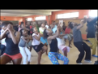
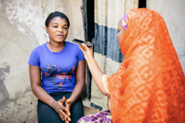
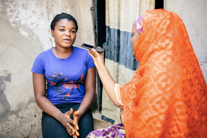

The Toolkit
8 steps of the creative development research journey
The Toolkit provides a guide to the eight essential elements of any successful creative development research project, as well as a few exercises and resources to help steer you through a successful project
8 building blocks of creative development research projects:

If you are new to research or just fancy some fresh inspiration or new ideas then this toolkit should have something for you.
Good creative development research is the product of collaboration and common sense. Many of the things we describe will come naturally to you. Use this guide to help you through the bits that are harder; it’s a resource for you when you need it, not a drill that must be followed step by step.
1. A clear brief

Define your challenge and objectives.
What is it
Traditionally a brief would be defined as “information given to a researcher outlining the client’s reasons for requiring research” (Association for Qualitative Research). At Girl Effect we see this stage as a collective effort to develop clear, focused objectives for the project.
Getting to a clear, well focused research brief can be a challenging process, and often involves having challenging conversations at the start of the research. However, it’s critical to the success of the project and if you get it right - you’ll be able to design a better methodology and get more helpful insights.
What does it involve
Define your challenge and objectives. At its essence, your research brief comes down to 3 big questions:
- What are you trying to learn?
- How will this learning inform and influence the creative idea?
- What would success look like?
Sum up all your thinking into a written document or research brief.
There is a research brief template in the Resources section.
A few practical tips:
- Keep it simple: a common mistake is to include too much internal detail which can overcomplicate. Your brief is a starting point for conversation with people outside of your team or organisation, and should plainly state your need for research
- A honest brief: try to approach it in a collaborative way, if there are tough political decisions to be made or choices you’re not sure about – spell them out in the brief: be clear about what’s unclear.
- Iterate: the brief is your current best thinking on the need and approach for research, and it should be an evolving document. Leave space for others to challenge, build on and respond to your brief in unexpected ways
- Be aware of your own assumptions: remember you’ll also bring all of your own assumptions to the table. Write them down, see if they contain a point of view. If not, put them to one side, but just be aware of them.
A brief is more than a document. It requires dialogue between researchers and stakeholders.
To get to the clearest set of objectives it’s important to stress-test and challenge the thinking you’ve laid out in the brief. You need to check you’ve considered all options, that you’re not missing anything and that you have good idea of what the top priorities for the research are.
Need help? A simple way of doing this is to run your brief through a few filter questions. There are three key questions to make sure you’re on the right track.
See the “3 steps to challenging your brief” exercise sheet
In creative development research it’s vital to understand and immerse yourself in the creative work. As a researcher, if you understand the thinking behind the creative you’ll have a much better idea of what to look out for and how to help.
There are a couple of different ways to get to this: a briefing meeting between the teams, a creative briefing document (or any background on the creative - creative see Yegna TV series creative brief), or even interviewing members of the creative and production to team about the idea(s).
Questions you might cover with the creative team include:
- The rationale behind each creative idea
- What hypotheses the team have about how the idea should work
- What reactions and opinions are they hoping to get from audience
- What they’re unsure about or decisions they’re hoping research can inform
Tip: we recommend the researchers write a creative hypothesis sheet which covers key questions and hypotheses to explore around the creative ideas. This is a useful way of ensuring alignment with the creative team ahead of the research. Later in the process it will also help you design a guide and do better analysis. See the ’8 questions for developing a hypothesis checklist’ exercise sheet.
Be aware of your own biases: you may find, as a researcher, that you have your own (sometimes strong) reactions to the creative ideas. Think about why you’re reacting this way – what assumptions and hypotheses are you brining to the research? Put these aside, but be aware of them as you continue the process.
Define your challenge and objectives. At its essence, your research brief comes down to 3 big questions:
- What are you trying to learn?
- How will this learning inform and influence the creative idea?
- What would success look like?
Sum up all your thinking into a written document or research brief.
There is a research brief template in the Resources section.
A few practical tips:
- Keep it simple: a common mistake is to include too much internal detail which can overcomplicate. Your brief is a starting point for conversation with people outside of your team or organisation, and should plainly state your need for research
- A honest brief: try to approach it in a collaborative way, if there are tough political decisions to be made or choices you’re not sure about – spell them out in the brief: be clear about what’s unclear.
- Iterate: the brief is your current best thinking on the need and approach for research, and it should be an evolving document. Leave space for others to challenge, build on and respond to your brief in unexpected ways
- Be aware of your own assumptions: remember you’ll also bring all of your own assumptions to the table. Write them down, see if they contain a point of view. If not, put them to one side, but just be aware of them.
“Strip it down to everyday language, not jargon. Do that and you can see more clearly what is and isn’t hard to answer. It also makes you realise all these assumptions and norms you have as a team or organisation, which the outside world might not share” - Researcher
A brief is more than a document. It requires dialogue between researchers and stakeholders.
To get to the clearest set of objectives it’s important to stress-test and challenge the thinking you’ve laid out in the brief. You need to check you’ve considered all options, that you’re not missing anything and that you have good idea of what the top priorities for the research are.
Need help? A simple way of doing this is to run your brief through a few filter questions. There are three key questions to make sure you’re on the right track.
See the “3 steps to challenging your brief” exercise sheet
”Sitting down with the research manager and researchers and going through every single objective and what we needed from the research was the most useful meetings we had on this project” - Brand Manager
In creative development research it’s vital to understand and immerse yourself in the creative work. As a researcher, if you understand the thinking behind the creative you’ll have a much better idea of what to look out for and how to help.
There are a couple of different ways to get to this: a briefing meeting between the teams, a creative briefing document (or any background on the creative - creative see Yegna TV series creative brief), or even interviewing members of the creative and production to team about the idea(s).
Questions you might cover with the creative team include:
- The rationale behind each creative idea
- What hypotheses the team have about how the idea should work
- What reactions and opinions are they hoping to get from audience
- What they’re unsure about or decisions they’re hoping research can inform
Tip: we recommend the researchers write a creative hypothesis sheet which covers key questions and hypotheses to explore around the creative ideas. This is a useful way of ensuring alignment with the creative team ahead of the research. Later in the process it will also help you design a guide and do better analysis. See the ’8 questions for developing a hypothesis checklist’ exercise sheet.
Be aware of your own biases: you may find, as a researcher, that you have your own (sometimes strong) reactions to the creative ideas. Think about why you’re reacting this way – what assumptions and hypotheses are you brining to the research? Put these aside, but be aware of them as you continue the process.
-
1
What stage of
creative development research are you
in?
Concept development, Prototype or Pretesting? See the detailed sections for the implications for your research.
To get there, ask yourself:
- How developed is the idea?
- How much space is there to change the idea?
Tip:You may also discover that your project is a mix of phases: you want to validate the core concept, but also test some early prototypes, for example. Ask yourself does this mean developing a methodology that does both, or prioritizing objectives to focus only on one?
-
2
What would you be
missing if you didn’t do this
research?
Play devil’s advocate to help you tighten the remit of the research. Prioritising and challenging your objectives is a good way to get to the underlying purpose of the research.
To get there, ask yourself:
- How varied are your objectives? How could you group or organise them?
- Which are the most important objectives?
- Which could you knock out? What would be missing if you didn’t cover these?
- Which are validation of previous research or good working hypotheses vs which are total unknowns?
- Which can best be answered by THIS research vs other ways?
- Which can best be answered by research now vs later?
-
3
Have you separated
the creative and research
objectives?
A common mistake is to head into the research asking the business or creative objective, e.g. ‘How do we create a new normal among boys’
- What are you trying to achieve / do / decide (business/creative)
- What do you need to learn in order to do this? (research)
- What other relevant research questions could help you understand this, but are not directly related?
Time
15 minutes
These are questions that you want the creatives / production team to help you answer before you start the research. Sometimes you may know the answers from talking to them already, other times you may want to sit down with them for a more formal Q&A. Use the answers to create a list of probes and hypotheses to explore in research.
- 1 How did you arrive at this creative idea? What decisions did you make along the way to arrive at this concept / execution?
- 2 How different is this idea/comms/product to what is already out there for young people? What do you think makes this stand out?
- 3 What alternative ideas or routes do you have? Are there any ideas you abandoned on the way? Is there anything you considered earlier but dropped because you thought it wouldn't work?
- 4 How will the research help you? What can be changed about the idea / What have you already decided on?
- 5 What would you be missing if you did not do this research?
- 6 What would be the ideal reaction to the creative? How do you want the different audiences to react / what do you want them to think, say or do?
- 7 What would be a disappointing/annoying/frustrating reaction from the audience?
- 8 What are you most worried about? What do you think people won’t understand or might react negatively towards? How might we work around this?
A clear brief - Resources
A few things that might help:
The Insights Toolkit: See Step 1
Past creative development briefs/materials:
2. A smart sample
Identify who you want to speak to.
What is it
The next step is identifying who will be most useful to talk to. Talking to the right collection of people is the most critical factor in determining the overall success of the project. Think about whether you want to effectively cover off different areas, or focus. You don't have to cover everybody all the time.
What does it involve
- 1 Defining your target audience
- 2 Determining your sample size
Your target audience is the place to start: Who is your target audience for the final advertising or product? Is there a primary and a secondary audience? Do you want to speak to both? Who else will be involved? E.g. if you are making a radio show for vulnerable girls and boys, do you also need to reach gatekeepers who may influence and control access to radio?
Thinking beyond your target audience: Experts, early adopters of media or tech, or older girls/boys may be better at articulating feedback or co-creating ideas. Focusing on extremes like positive gatekeepers or rejecters of the brand can also give interesting perspectives if you are looking for fresh insights, or a lateral point of view.
Tip: In the early stages of testing your idea the target audience may be quite broad and your research sample should reflect this, but as you get closer to launch you should be able to focus on a more defined target audience (see detailed sections)
Insights Toolkit:
Try to include different types of people in your research to get different perspectives on the same challenge
There’s no universal answer to this. Too small and you miss important voices or can’t be sure of results, too big and you get diminishing returns as interviewees keep telling you what you already know. So how can you decide?
Learn from the past: Look at past projects in the market or at similar stages: how big was their sample, what criteria did it cover? Talk to someone involved : did they feel they covered all their audiences sufficiently, did they regret leaving any gaps?
What does ‘representative’ mean? Most creative development research is with qualitative samples, which run to tens not hundreds of respondents, and so are not statistically representative of a population. What they should represent, though, is all the factors you have identified as important (see ‘factors to consider’) and your sample should be big enough to accommodate these differences in location, income etc..
Find the most efficient combinations: Your first draft of a sample may have a dozen or more different groups you want to speak to. To make it more practical, look for efficient ways to combine your sample factors: e.g. if you know that access to social media is heavily skewed to cities and the highly educated, can you cluster these factors into one group?
Time, budget or other constraints? Here are a few tips
- Piggy-back off depth interviews or workshops: recruit depths and ask them to bring a few friends for the final hour for example
- Consider super users: they’re the quickest to track down, often the easiest to talk to (e.g. Yegna listening groups), expand out to non-users from there
- Go where you think the problem is: e.g. people with negative perceptions
- Consider alternative research methods, either as main methodology or to fill in the gaps: e.g. TEGA, secondary research, audit of existing knowledge
Traditionally we used ‘snowballing’ recruitment methods – contacting a local member of the community and finding appropriate respondents from there. This is done differently in different countries and contexts, its best to ask how different agencies do this.
Tips:
- Try more communal approaches like going through youth clubs or community groups where respondents will know each other and be more at ease. But be aware of sample limitations – e.g. are some girls/boys NOT part of these groups?
- Use the recruitment phase to learn – this is your first point of contact and it’s often an opportunity to learn through some light research (e.g. asking about basic media habits), this also builds trust if recruiters are present at fieldwork sessions
Concept development or ‘idea’ phase research
Larger and more varied sample: sampling at this stage can be challenging, as you’re keeping ideas open and your instinct is likely to be to keep all possible audiences in the mix. To prioritise your sample – and keep it within budget – you may find that desk research on the audience helps. Looking at past research and public data try to identify: which are particularly influential ages, moments of transition, which geographical differences are really significant?
Specific recruitment criteria for more meaningful co-creation: in this earlier phase of research co-creation methodologies are more frequently used. It’s therefore worth spending more time, and perhaps a little more money, in recruiting articulate, confident and thoughtful respondents, who are more likely to be able to help us reshape our ideas. The caveat is that this shouldn’t lead you to change your criteria around vulnerable youth – i.e. care should be taken that ‘articulate’ and ‘confident’ doesn’t lead to excluding out-of-school girls.
Gatekeepers: You may well want to include gatekeepers at this stage. For instance, the Open Studios research in India in 2016 found that girls in Mumbai were familiar with empowerment messages in media, but felt that it was their mothers, aunts and grandmothers who were holding them back. There was a clear rationale for talking to gatekeepers thoroughly in the next phase of research. On other occasions, the onus may very clearly on engaging and persuading the core audience of youth and so gatekeepers may be covered with a very small number of interviews, or left until the prototyping phase.
Prototyping research or ‘execution’ phase In the prototyping phase, the emphasis is moving from stretching to testing ideas – and hence it becomes more important to have a sample that is as representative as possible of the final audience. This means being aware of and avoiding the things which might skew your sample too much – areas with an over-representation of media or access to technology for example.
Pretesting research or ‘the final check’ As with prototyping you should ideally seek out a representative sample. However, if your resources are limited, you’re confident the execution works but you have specific aspects you’re looking out for in your ‘final check’, for example you’re concerned gatekeepers may find it culturally inappropriate – it’s possible to focus purely on these audiences.
Additionally, if you’re seeking out gut reactions and testing appeal or comprehension a mainstream audience is best. However, if you’re looking for builds and new ideas, a more leading edge sample would work best.
A Smart Sample checklist
Key audience factors to consider
-
Age groups: with younger audiences small age differences make a big difference. It’s best to separate groups out by a 2-3 year band at most (e.g.10-12/13-15/16-19)
-
Location: cultural contexts, languages and access to resources can differ drastically in just 50 miles or less. Research these differences before deciding on your locations. Think about the rural/urban mix.
-
Education: is a good indicator for vulnerability and can require consideration with approaches and stimulus
-
Economic: do you want to speak to a specific income group or to people with different levels of family income?
-
Vulnerability - see Girl Effect Vulnerability Criteria
-
Access to the media channel your idea will use (e.g. radio, social media, mobile, etc.): if your idea is TV based, some audiences will have more or less exposure and respond to ideas differently
-
Relationship to your brand: e.g. do you want to speak to both current and potential listeners, people who are fans, or who are dropping out?
Tip: Think of the grey spaces. it’s easy to get caught up in clear cut sample binaries (urban vs rural, users vs non users) try to consider where there might be overlaps and more complex relationships e.g. a rural location near a major road side market might mean access to outside influences is greater
3. A tailored methodology
The goal is to design a methodology that is right for your objectives.
What is it
The goal is to find the best way to talk to people about the ideas in play. Where would this conversation be most comfortable and interesting? When is the right moment for it? Whom should we talk to – individuals, small or large groups? How should we encourage them to talk about it? And how much (given that sometimes you learn more by watching what people do than listening to what they say).
What does it involve
- Choose your methodologies
- Tailor your approach
Remember, at it’s a core a methodology is simply finding the best way to talk to people about the ideas in play. It comes down to three basic questions:
-
1
What do you have to show
them:
For example, is it something they need to consume and respond to alone, or in a group? How developed is the idea – are we asking them to build on an early idea, experience a prototype or respond to a finished product? Maybe both?
-
2
Where will you meet
them:
What setting is most appropriate: is best to conduct the session ‘in situ’ e.g. at home, at school, at a youth club, or at a different ‘neutral’ venue like a community hall? Other times a digital forum, like WhatsApp might make the most sense.
-
3
Who will you meet them
with:
We could meet them on their own, with their friends to put them at ease and observe natural conversation, with family, with school mates, or with other people like them? (E.g. Other parents or community leaders)
These are the essentials of any methodology. Next we’ll go through the steps of creating a tailored approach that works for you – but it’s useful to keep these simple questions in the back of your mind, and perhaps go back to them at the end of the process.
There is a fundamental toolkit of approaches that we draw on for creative development research. Eight core options available to us in any project.
Each has its strengths and limitations, and there are of course quite a few variations on each – for example, focus groups can be co-creation workshops, depths can become paired depths.
See the next pages to familiarise yourself with the strengths, limitations and possible adaptations of each of the core approaches.
As an experienced researcher, the strengths and limitations of each approach may come naturally to you, but it’s worth reading the possible ways to adapt each of the approaches to give you inspiration for tweaks
Once you’ve chosen your core methodologies, the the next step is to decide how to adapt, sequence and combine the different tools to tailor the methodology to the specific challenges and objectives of the brief.
Two rules of thumb to bear in mind when doing this:
You get the best results when you veer from the norm: standard approaches are there to be tweaked and adapted. Even small changes can make a big difference for your approach. It’s a continual learning process: what works well in one location or with one audience group may not work with another, you have to stay open to learning from mistakes, and what works well, so you can gradually improve methodologies.
How to do it?
This involves taking into account the range of factors and specifics of your brief. It typically comes down to 3 broad considerations.
See the framework below and exercise sheets for adapting your methodology on the following pages.
Considerations for developing a tailored approach
THE CREATIVE IDEA
- When/where/how will the idea be consumed in real life when it’s launched?
- How new or familiar is the idea?
- What is happening around the idea that your audience may be unaware of?
THE RESPONDENTS
- What and how much are you asking of them?
- How easy and realistic is your topic to talk about?
- Are you looking for a completely new angle?
- How sensitive or challenging is your idea or topic?
THE RESOURCES & PRACTICALTIES
- What’s the most efficient thing you can do?
- What does a tailored approach give you vs basic methodology?
- Have you considered the little biases and limitations of your approach?
Where / when / how will they consume it in real life when it’s launched?
e.g. Individually or in a group setting?
A particular environment or moment (e.g. online, on the go, at
youth clubs)?
Possible answer
- Multiple methodologies or staged approach to allow for consumption in different settings (with friends vs family vs alone)
- Testing your idea ‘live’ or ‘in situ’ (youth clubs, videohalls, online): if the idea your are looking at is designed for a particular environment it is useful to test ’live’ in this moment so you can take into account how the social and environmental factors can shape reactions. It may be important to discuss reactions outside of this moment too (e.g. if environment is at home with family, it will be important to discuss the idea away from parents or gatekeepers too)
- Testing ’in situ’ followed by interview or group discussion
How new or familiar is the idea?
e.g. is the idea completely new to the audience? Is it something that is already in their lives and they know well? How easy will it be for them to grasp the idea within a short research session?
Possible answer
- Homework tasks: if completely new to the idea you may want to give participants more time to digest it. Consider pre placing respondents with the idea before meeting them to discuss it
- Staged approach: you could also try an observation session to allow respondents to interact with creative, followed by groups or interviews to explore engagement and recall
- If they are familiar with the idea: this can be an advantage, however if you’re trying to change or update things (e.g. Yegna bringing in boys to the radio show), you’ll have to watch out for conservatism/concern for the old idea. How can you encourage a mood or environment that encourages them to think about change? E.g. by putting the change in their hands as existing fans
What and how much are you asking of them?
e.g. Do you want them to add their own ideas to your early stage idea?
e.g. Do you have multiple things you need to test
- Homework task: if you want them to contribute to your idea it might be worth asking them to do some preparation/pre-task or bring in stimulus from their own lives which could help them to add to your concept or brand identity
- If you’re testing lots of different things: ? it will be smart to think about how you might approach these differently, rather than trying to do both in a single session. For example, a concept test workshop to get responses to the idea and potential advertising, followed by a listening group where people listen to the show in depth
How easy or realistic is it to talk about the idea?
e.g. Is it a topic they are used to talking about? if not, some preparation to get them thinking will make the groups run more smoothly
e.g. Is it something they can tell us?: Is it something that’s conscious / they are aware of?
Possible answer
- Homework task encourage them to reflect on less discussed topics: if it’s something that is difficult to discuss some preparation to get them thinking will make the groups run more smoothly
- IF it’s something they can’t tell us: consider expert interviews, cultural analysis or observation research to explore less conscious behaviours
How challenging or sensitive is the idea or topic?
e.g. consider where and with who respondents will be most comfortable talking about something
e.g. How can you make a session more respondent-led?
Possible answer
- Family or friendship groups / mini-groups: are especially useful for more sensitive topics, but can be helpful to increase comfort levels in any workshop with young people Could you build up trust with several points of contact vs just one research session (e.g. more involved recruitment, a workshop followed by a home visit)?
- TEGA: for broaching more sensitive topics
Are we looking for a new angle? e.g. looking beyond standard groups and interviews to get surprising insights
Possible answer
- ‘Conflict groups’ where two groups with different ideas or perspectives debate Extreme users: going to the extremes instead of a representative sample, for a fresh take on the idea
- Deprivation experiments: e.g. living without social media for week (if they can’t or don’t we’ll learn why)
Tip: Even when experiments don’t work as planned you often still gain insight: for Open Studios we encouraged teens to share ideas across different countries, something we thought was an exciting part of a global brand proposition, Respondents lack of confidence and interest in doing this was a clear reminder of how locally they saw the world.
It’s important to always bring ideas back to the brief and the resources – the best tailored approaches solve a particular challenge in the brief, or get you to the right answers more quickly.
E.g. does your methodology solve a problem in the brief (such as sensitivity of the topic, novelty of the idea)?
E.g. does your methodology allow you to speak to a larger sample more effectively?
Possible answer
If you need to boost your sample with little resources, consider:
- Turn the recruitment process into short depth interviews, to give the sample a boost
- Hall-tests or intercepts to rapidly expose larger numbers of people to your idea
Have you considered potential biases and limitations of your tailored approach?
The approach you choose can start to steer the findings in a particular direction without us being aware. Even where these biases are outweighed by the benefits of your approach, it’s crucial that you are aware of them.
Possible answer
Be aware of biases,
- e.g. think about how using specific venues, recruiting particular audiences, or running research at particular times of day may influence who attends (and who does not) and how this may affect your findings*
- e.g. if you’re pre-placing respondents who have little exposure to media with a new media idea is there a risk that its novelty value among their peers will inflate how much they say they like it?
A tailored methodology - Resources
A few things that might help:
Past creative development briefs and proposals:
- Malawi Prototype testing brief: used a staged methodology that involved and observation session followed by reconvened groups to explore engagement and recall of products
- GEM research proposal: interactive workshops with follow up immersions with girls
- Global Brand Research / Open Studios Proposal: Tega Panel Pre-tasks followed by Agile Design Sprints with Concept Testing Research built in
4. Great stimulus
Stimulus is your best current representation(s) of your idea: the more you get it right the more you learn about your idea
What is it
Stimulus is used to show your idea and elicit the most rich and meaningful
responses from your audience. It’s one of the central challenges of creative
development research - how to present new ideas and get interesting and useful
responses from young people who may struggle to articulate their feedback.
What does it involve
- Deciding what to show to respondents
- Deciding how to show it to them
The answer to this question largely depends on how ‘ready’ your creative idea is. It’s helpful to think back to the three types of research (concept development, prototype testing, pretesting).
As a creative idea becomes more developed, the answer becomes more clear – show them the real thing (especially pretesting). Allow them to watch the music video, listen to the radio jingle or use the mobile service on their phones. However, earlier in the creative process when the idea is less developed, this question can be more challenging (especially concept development).
The goal is to present and discuss the stimulus in a way that will get unbiased, rich responses. You’ll need to consider:
Order effect: If you are showing a handful of ideas, always rotate the order in which you show them to see how this changes reactions
Getting conceptual vs executional feedback: some ideas require more detailed feedback and discussion, other ideas more instinctive, emotional reactions. E.g. for brand concept testing you might go through ideas quickly, for character testing you need more detail
How to make it more respondent led: how do you let them change or build on the stimulus? How do you create an environment where it’s their stimulus. Can they rip it up, pass it round? Let your respondents determine how they want to consume it and give them the space to do so on their own terms. You often learn the most valuable stuff from letting them play.
Always have a physical representation as back up: Some respondents might find it difficult to discuss the details of a radio show they’ve just listened to or a video they have recently seen. Having a tangible representation of the idea or content (video stills, scene synopsis for radio dramas) can often help people express themselves. It’s always important to get their spontaneous responses about what they remember / stood out, before introducing these
Tip: Stimulus is not just used to bring ideas to life, but to allow respondents to express their thoughts and emotions, which are more difficult to express verbally. Consider how you can use some of your stimulus for this (see the ‘Highlights and Inspiration’ section for more).
“I try to get them to put the stimulus on the wall or in their hands…so they can look at what they want” - Advertising Creative
Approaches to using stimulus also vary by type of media or content you’re showing:
Shorter Video (e.g. music videos): if you’re showing fast moving content like music videos, songs or ads, remember there’s a lot going on in a short space of time. First impressions are important. But people’s responses may evolve after a second or third viewing/listening. Replay the content after you’ve had an initial discussion and explore how reactions develop.
Longer Radio / TV episodes: if your TV or radio show is 30 minutes or 1 hour long, you’ll benefit from pausing at key points or after scenes you want to investigate in more detail to have discussions and explore reactions. This gives you feedback in the moment. You can also give respondents more control over this – ask them when they want to pause or say something, or make it a game and give them a ‘pause’ sign.
Magazine or other products that require deeper engagement: Allow them to consume media on their terms, privately if appropriate (magazine, iPad for viewing videos, etc.), for more individual and private responses
Advertising/comms testing: in the real world this will often be consumed quite quickly (e.g. passing a billboard), show it to them briefly, discuss gut reactions and questions, before revisiting it in more detail
Some examples of how to use stimulus in sessions:
Getting conceptual vs executional feedback: Yegna cultural resonance research When trying to explore the ‘concept’ of Yegna to an audience in a region of Ethiopia that were unfamiliar with the brand, we used existing Yegna materials (music, video, images) as stimulus. We found that participants were honing in too narrowly on evaluating the stimulus independently, instead of conceptually.
Instead of showing each piece individually and asking for comments (which created a ‘stop/start’ discussion), we tried presenting the radio drama, talkshow and music video consecutively to ‘immerse’ respondents and prompt a fuller discussion geared towards letting the respondents tell us what they found most interesting. We then included specific probes by format to ensure detail on all media was captured
Concept development GE examples:
Story boards: below are extracts from a story board used to bring to life the pilot episode of a concept for an animated series called ‘Pitch!’ in Nigeria (Open Studios)
Great stimulus - Resources
A few things that might help:
Past creative development stimulus:
5. A creative discussion guide
Plan sensitive, engaging sessions that will get the most from respondents
A discussion guide acts as a detailed outline for what you’re going to discuss with your respondents and how you’re going to go about doing it. It will be used alongside stimulus so it’s good, but not essential to know what stimulus you’ll have before developing the guide. Once your stimulus is finalised you should revisit your discussion guide to make sure it is optimised for the stimulus.
What does it involve
- Translating your objectives into key research questions
- Creating a flow or structure
- Ask good questions
- Add probes, and creative exercises
- Consider your language
A discussion guide acts as a detailed outline for what you’re going to discuss with your respondents and how you’re going to go about doing it.
A discussion guide is a critical reference point for the project and helps you:
- Organise your thoughts and ensure you’re asking the right questions
- Plan sensitive and engaging sessions that will get the most from respondents
- Align your thinking across research, brand and creative teams to make sure everyone’s on the same page
A few points to bear in mind:
Each guide should be different: while guides may follow a similar flow or structure, the exact questions, activities and probes can and should b tailored to the specifics to your specific session
Methodology: a focus group guide will differ from a depth interview guide, in the process that follows we highlight the key differences
Iterative: the guide may change as the project progresses, if you’re running a pilot session you will want to tweak and update the guide based on what has and has not worked, for example. Or you include additional probes as you develop hypotheses after the first few groups
Remember, a guide is just a guide?
How strictly you follow the guide in practice will depend on the kind of project you are doing. A guide for ethnographic interviews on an early stage idea will tend to be used flexibly; it’s good practice here to adjust the order of questions to follow the respondent’s interests and energy and to introduce new questions if new angles emerge.
A guide used to explore finished creative ideas in focus groups may need to be followed much more closely, since going off script may ‘prime’ respondents thinking and affect how they respond to the idea; it is more important to follow the guide in a similar way across sessions.
In any session it’s important that the guide doesn’t become an obstruction – something that saps respondents energy by constantly taking them back to a set order. When it comes to probing their feedback or encouraging to share builds, it’s important to stay flexible and let respondents lead in their reactions to your idea.
There are three key steps to designing a discussion guide:
Brainstorm your structure and questions
Add probes, exercises and activities
Review and develop
See the exercise sheets for practical guidance on completing these 3 steps.
There is also a list of questions exercise and activities you can use to make your sessions more engaging and get better responses.
There is Discussion Guide Template in the resources section, along with previous exxamples of discussion guides.
How to do it:
- Look at your objectives and turn these into topic sections
- Review this list: are there other topics for discussion that are missing; add these in
- Arrange these topics into an initial order, starting with broad, contextual questions, getting more specific as you go. Play with the order a bit: what feels most natural, most efficient (e.g. can you get through a section quicker if it comes later on?)
- Consider where the best place to show and use the different bits of stimulus will be and make a note of these; for tips on how to include and show stimulus see Great Stimulus section.
- When you’ve got an order you’re happy with, sketch out questions for each section. Try this fast, without filtering, get everything out and then finesse it later,
- Try to have in each section a mix of types of questions, some more factual (e.g. when do you normally listen to radio) some more emotive (e.g. how does your favourite show make you feel)
Time
30 - 60 minutes
- Think about the first 10-20 mins of the interview or discussion: how can you make people feel comfortable - confident in themselves, and bonded as a group. Have you given them enough time to do this? What tasks, games, or questions could you give them here that would break the ice - could any of these start to get them thinking and talking about the questions in the research. See the exercises and activities section for activities and exercises for creative warm-ups
- Include points in the guide where you want to probe answers in more detail. This is a good time to visit your creative hypotheses sheet to look for additional questions, probes and things to look out for and observe. (If it feels easiest keep this as a separate sheet to take into sessions).
- Allow space for indirect ways of getting the answers you want. Could you ask the question projectively? Or use an exercise instead of a question - e.g. making a collage of images that sum up how listening to the radio feels . See the exercises and activities section for more ideas
for all sessions you want to consider how to make the respondent comfortable and engaged, and how you can ask questions in ways that will get the richest response.
However in some cases you’ll be able to do this verbally with questions and projections, in others you’ll need to use exercises and activities. For example when:
- Conducting researching with younger or less confident respondents
- Group activities in focus groups or workshops may help get better responses and allow the group to bond and discuss feedback
- Sensitive or difficult subjects – where asking more direct questions is challenging or not appropriate
Time
30 - 60 minutes
A creative discussion guide - Resources
A few things that might help:
The Insights Toolkit: See Step 5
Past creative development discussion guides
Discussion guides come in all shapes and sizes, and while there is a basic template on the following page, there is no ‘perfect’ way to do it. Below is a list of guides we think work well for different reasons. Cherry pick the best of each to create a guide that works for your project.
Pre-tasks
- Global Brand Research / Open Studios TEGA Panel: for an idea of what pre-task questions can look like
- Ni Nyampinga 2012 research: for an engaging Pre-task template
Discussion guides
- GEM workshop discussion guide: a clear, creative guide, built around projective exercises and activities (also includes some useful tips for moderation! A Girl Effect favourite)
- Yegna Cultural Resonance workshop guide: a straight forward with a clear structure
- Ni Nyampinga Radio Drama Pre-testing guide: a simple, well structured guide with lots of probes
6. Flexible Fieldwork
This is the end of the planning phase, be ready to absorb and react.
What is it
After all the preparation you are ready to go out into the field and start speaking to people. This brings all the wonderful, messy richness of interacting with people. Plans may need adjusting, so cooperation and empathy come to the fore. During this time you also start to analyse the findings.
What does it involve
- Carefully brief your field team: ensure researchers are testing and probing with a purpose, and not just checking for comprehension, engagement or appeal of the idea.
- Be flexible: stay agile in field. If your methodology or questions aren’t getting the best responses try mixing up the guide or a different format. Each project is different, and you never get it 100% right in the research design. Pilot the approach and working closely with the moderator.
- Good moderation: ensuring you’re running engaging and sensitive sessions, and begin interpreting and analysing responses
- Girl and young person safety: make sure you know what to do should a child protection issue arise. You should have been given copies of Girl Effect’s Safeguarding Children Policy and received some training on this. You should also consult with the in-countries teams on their safeguarding arrangements and local procedures for reporting and responding to safety and protection issues.
- Consent: you must always gain informed consent with all participants in advance.
See: Girl Effect Child Safeguarding Policy
Fieldwork can be fun, insightful, challenging, but sometimes also overwhelming and chaotic – here are a few tips for managing fieldwork to make sure you get the most from it.
Carefully brief your field team: ensure researchers are testing and probing with a purpose, and not just checking for comprehension, engagement or appeal of the idea
Be flexible: stay agile in field. If your methodology or questions aren’t getting the best responses try mixing up the guide or a different format. Each project is different, and you never get it 100% right in the research design. We recommend piloting the approach and working closely with the moderator.
Expect and acknowledge problems: Few projects run totally smoothly. Some bumps along the way won’t affect the outcome, but others will: a group who are not on spec, an early workshop where the moderator struggled to explain the ideas as planned. It can be tempting to brush over these, but it’s better to acknowledge and work with them. If things have gone really wrong – consider re-running a session if possible or placing caveats around the findings if not. Create a climate where people are comfortable being open in this way.
Encourage creatives to participate: this is an opportunity for creatives to work closely with their audience. however manage fieldwork attendance sensitively as we can easily overwhelm respondents
Girl safety: Make sure you know what to do should a child protection issue arise. You should have been given copies of Girl Effect’s Safeguarding Children Policy and received some training on this. You should also consult with the in-countries teams on their safeguarding arrangements and local procedures for reporting and responding to safety and protection issues.
A recap on some fundamentals of moderation:
Don’t lead the witness. The information you get won’t truly reflect the respondent’s point of view if you use questions to guide them to the answers you want to hear.
Use open questions. Avoid questions that beg a ‘Yes’ or ‘No’ answer; “Do you...”, “Are you...”, “Did you...”, etc. Ask questions that start with: Who, what, where, why and when. You can probe deeper by asking them to: Tell us more, or explain what you mean. This offers more opportunity for explanation or conversation rather than one-word answers.
Listen to the interviewee. Sometimes you get more information by paying attention to what they are not saying. Don’t interrupt or finish their sentence.
Show that you are interested. Use non-verbal cues such as eye contact, nodding and smiling to reassure the person you are engaged and interested in what they are saying.
Respect their time and space . Agree on the outset how long you need. Finish on time and always ‘negotiate’ more time if you need it. Always ask if you can take photographs of their personal space, and the objects in it.
Endure the awkward silence. It is okay if there is silence during the interview. Give people time to think rather than fill the silence with your own voice.
Maintain energy. Maintaining high energy levels throughout the activity is crucial. The activity should not feel like work, it should be fun. Participants should be engaged, sharing information on their terms, even if you are talking to an expert. If the energy is getting low, do an energiser. See the Activities and Exercises in the Discussion Guide section for energizers and warm ups.
See the Set the rules sheet in the resources for a moderation fundamentals checklist.
When researching creative ideas, there are particular moderation challenges and principles to bear in mind.
For Concept Development research (when your idea is still just an idea, and not yet a tangible execution):
Remember the ‘stimulus effect’
At this stage we’re not researching finished executions, but often more abstract ideas that may not yet be expressed in terms that make sense to the target audience. You’ll need to separate out problems with the stimulus or expression of the idea (the stimulus effect) with problems with the idea’s fundamental potential.
Approach it with a collaborative spirit:
Invite Creatives to the sessions and find points where they can join in – e.g. working directly with respondents at the end of sessions to build and remake ideas. Encourage respondents to recognize that they are creative contributors and help them to enjoy thinking inventively. Start the session with creative thinking exercises and throw in energisers mid-way as necessary. Set up the room in a way that reflects this – that respondents should feel free to contribute, critique, let go and enjoy themselves. Not a school room.
A skilled moderator
Moderating concept development groups requires a broad range of skills and techniques. Moderators need to help respondents to absorb new and perhaps sometimes provocative ideas. They need to stretch respondents thinking, to think creatively, sometimes laterally about what a ‘build’ on an idea could be. They have to help contextualize stimulus and encourage respondents to look past the shortcomings of early stage stimulus. Moderating means looking for hidden potential in the ideas people reject and tactfully challenging people to see if there are downsides to the ones they love, it means not shutting things down.
People can only tell you so much, you have to read between the lines
Many of our teen respondents will be unused to meeting new people or critiquing new media ideas. However well-recruited and moderated the groups
are, conversations may often be hesitant and stilted. So sometimes we have to look for the answers in the small clues respondents can give us,
and in what they do as well as say….The words “I like it” may seem a limited response. But they mean a lot coming after the first time the group
has been filled with laughter and when you notice the teens singing the words of the chorus on their way out of the group.
A few tips for successful observation:
Hypotheses: write down a list of expected or ideal reactions for your different bits of stimulus – what do you want people to do and say
when they consume it? This way you are more attuned to things that surprise, disappoint or excite you.
Capture observations: make detail notes of everything that’s happening, even if you don’t know what it means yet. It will also allow you to compare reactions across the groups. If you’re going to record the group on audio or video, do so once the atmosphere is more comfortable or you’ve seen their natural reaction. A useful tool that can be referred back to in analysis is to divide note page intro 3 columns: ‘what is said’ /’what this means’/ what we see or is happening – See Taking Good Notes exercise sheet
Do it outside of the formal group time: you get the most genuine reactions when you don’t formalize the observation or observation session. For example, as girls and boys arrive, you could have your magazines scattered around the room, and as they wait for the session to begin see if and how they interact with them. Or replay the music video after the session has ended and see if they want to stick around, they may reveal more genuine reactions after the session has ‘ended’. Chatting to and hanging out with respondents before and after a session breaks the ice, and also lets you notice natural behavior.
For instance, when testing an idea for a football-based drama during Open Studios in Nigeria it was interesting to see the girls starting to play football with the boys after the end of the session.
Tips
Here we have more finished idea, and we’re confident there is appeal in the core idea. We’re trying to get to the little executional details and tweaks that could make or break the idea. What specifically is / is not working, and why is / or isn’t it working the way you’ve done it? How else could you do it to make it work?. It’s good to go in with a lot of hypotheses on what issues might emerge so we can look out for an explore these (e.g. will girls think the ‘violence’ scene is too strong, will parents understand the key message of the episode)
How people react should determine the flow of the discussion, rather than rigidly following questions set out in the guide. If the first thing they talk about is music, allow them to talk about this, if the female characters are the focus of the conversation, find out why before discussing other characters or other elements of the creative. What they want to talk is lesson in itself.
Nearly all respondents can tell you if they like or dislike an idea, few can tell you how fix an idea that isn’t working. So when respondents offer suggested changes to creative – “she should look less modern” - our job is to understand the reasons behind their suggestions versus taking them as creative recommendations. For example, if they suggest changing the looks or styling of one your characters, it is often more valuable to find out why they have suggested this rather than taking the suggestion at face value. Is it because the character looks too urban? Too village? Too old or young? This gives the creatives clearer direction for change.
Sometimes the ideas we present may initially make people uncomfortable, confused or surprised. We need to recognize these reactions, but be aware they can also be positive signs. Sometimes the best ideas are the ones with most tension, as they create debate. Our role as creative development research moderators it to explore this. For example, around sensitive issues like violence respondents may tell you they ‘didn’t like’ or ‘want to remove’ this, when in fact they may just mean it emotionally affected them, or that it would be difficult to listen to, or read this when some of their family are around. As you explore this in more detail, you may find ways in which new and thought-provoking ideas can be absorbed more comfortably.
In any group research session group-think and not hearing from less confident respondents are two big problems of group discussions. They can be addressed with skilled moderation, but it’s also worth considering individual exercises. You might ask respondents to write down 3 spontaneous words when they first consume or see your idea (NB take care with literacy issues) or to talk about three things they remember. You can try setting up a ‘sound off booth’ area where people can go and give private thoughts or briefly interviewing 1 or 2 quieter individuals at the end of the group.
Resources - Flexible fieldwork
A few things that might help:
7. Thoughtful Analysis
Collate your findings and figure out what it means for the creative idea
What is it
The part where the researchers come together as a group after reviewing their notes, and try to organise and make sense of the information gathered during the fieldwork. It’s one of the most important and difficult parts of being a researcher, and good analysis often comes with a lot of experience or training.
What does it involve
- Doing even a small bit of analysis while it’s fresh: It’s often about the intangibles in creative development research, the hunches, the feeling in the room, which can easily be forgotten
- Ongoing analysis: qualitative data analysis should begin as soon as you begin collecting the first piece of information as it can help you to spot tactical changes you can make to the process: e.g. reworking the stimulus, reordering the discussion
- A team analysis session: create an analysis framework based on your objectives and run an informal analysis session with the full team looking at response to the idea, main themes, evidence and suggested directions for the creative
- Always refer back to the objectives and the creative brief: analysis should focus on your objectives. Use the brief to steer you. It’s a great place to turn if you get stuck.
At GE, and amongst many social and consumer companies (what we can call the ‘market research’ category), we tend to use an approach that is based on ‘thematic analysis’(1): a process which involves identifying reoccurring concepts we’ve seen in the research (for example key words, responses, descriptions, images) and organizing those into emerging categories or themes. These are then continually reviewed and developed as more evidence is analysed. Broadly speaking there are four steps:
-
1
we review in careful detail what we have seen and heard
-
2
we organize these observations into coherent themes
-
3
we check these themes back against the fieldwork data
-
4
then we identify the implications of the research for what the brand should do next.
There are of course many ways to do this – from coding and counting transcripts, through to a team discussion with post-it notes or a flipchart. It varies from project to project, and there are key differences in how you might apply it to creative development research, compared to a formative research project, for example.
For Creative Development Research, it is important that the product or idea frames our analysis.
We should also have a number of specific hypotheses / key questions that came with the brief (e.g. do people understand the story of Zathu coming together, do both urban and rural audiences warm to the band’s styling…) These are our other main starting point for analysis.
Be analytical, but be positive – Analysis in creative development research often requires both critical and creative thinking. It’s important to understand why an idea doesn’t work and to be able to explain this logically, but we also need to problem solve, to say what would get an idea to work better. The best creative development researchers want to see ideas succeed and are curious about looking for solutions.
Make use of serendipity – The mis-recruited group, the respondents who misunderstood the stimulus, the random conversation that occurred whilst waiting after the group for a delayed minibus – occasionally the left-field moments in creative development provide the fresh direction we are looking for. Look out for and consider unexpected moments around the research… stay open to the unusual.
So in creative development analysis the process is likely to look like this:
-
1
People – review the respondents group by group, or individual by individual. What are they like and how does this explain their reaction to the ideas we showed them?
-
2
Reactions to product or idea – based on classic response measures (e.g. comprehension) and on the specific questions that come with the brief. Look not just at what was said but respondents’ tone / what was meant / body language etc…what is the sub-text of the discussions.
-
3
Stimulus – think about the stimulus people saw, its limitations, the role it might have had on reactions
-
4
Themes – what patterns are emerging under each response, can we create themes or analysis descriptions under each?
-
5
Evidence – go back and check and refine your themes, this includes photos, notes, stimulus and activities, etc.
-
6
Brief – after doing this, discuss implications and fixes for the brief: how could the product or idea develop to better suit the target audience?
Analysis criteria: The following are criteria that are typically apply when evaluating responses to a new campaign or brand idea. Of course some will be more or less important or relevant in each individual case, but they offer a useful starting point for analysis
- Gut response: what were people’s instinctive (spoken and unspoken) reactions to the idea
- Comprehension: what did people understand or not understand; what aided or stopped comprehension; could people still engage with the idea despite not fully understanding it?
- Excitement: how much energy was there in the room? Did people spontaneously want to talk about the idea? Does it get people chatting, laughing, dancing?
- Consensus: how similar / different were reactions across different groups and interviews? What explains this?
- Longevity: did people find it easy to keep talking about the idea, or did energy fade? Do people find it easy to imagine the idea developing, gaining new dimensions, changing over time?
- Originality: did people feel there were similar ideas they’d seen before? How did it compare to other ideas already in the market?
- Relevance: who in the audience felt the idea was made for them and their peers?
- Effect: what can we expect the audience would do in response to the idea if they saw it in real life? For instance, can we see that it was already generating conversations in the group, encouraging people to think differently or ask questions?
Exercise: Creative development analysis process
-
1
People
Review the respondents group by group, or individual by individual. What are they like and how does this explain their reaction to the ideas we showed them?
-
2
Reactions to product or idea
Based on classic response measures (e.g. comprehension) and on the specific questions that come with the brief. Look not just at what was said but respondents’ tone / what was meant / body language etc.…what is the sub-text of the discussions.
-
3
Stimulus
Think about the stimulus people saw, its limitations, the role it might have had on reactions
-
4
Themes
What patterns are emerging under each response, can we create themes or analysis descriptions under each?
-
5
Evidence
Go back and check and refine your themes, this includes photos, notes, stimulus and activities, etc.
-
6
Brief
After doing this, discuss implications and fixes for the brief: how could the product or idea develop to better suit the target audience?
Thoughtful analysis - Resources
A few things that might help:
8. A helpful debrief
Bring it all together in the most efficient, engaging and useful way.
What is it
A good creative development research debrief is one that provides new insight, but clearly answers the brief, in an engaging way
for the audience. The goal is
to produce the most helpful response to the brief.
6 things to bear in mind for concept development research
-
1
Tell the most helpful story:
A good creative development research debrief is one that provides new insight, but clearly answers the brief, in an engaging way for the audience. The goal is to produce the most helpful response to the brief.
-
2
Give the creative teams the confidence to make decisions:
Make sure you are illustrating your conclusions and recommendations with quotes, pictures, clips that come directly from the audience
-
3
Provide inspiration:
Successful creative development research debriefs also inspire creatives – this means thinking beyond 40 side PowerPoint decks
Remember, the goal of a creative development debrief is to give creatives the confidence to make decisions and inspire them to push the idea forward. The research is there to serve the idea, and this means proving the most helpful response to the brief.
However, the role of the debrief is not to provide the ‘final answer’. Our job is to explain what is working, what is not, and to provide advice on the way forward. While we want to provide clear direction on where to go next, the final decision is left to the creatives.
With this in mind we tend to use quite straight forward template for creative development debriefs - that encourage us to distill the complexity into an efficient and helpful resource (see below).
This structure is by no means a rigid template to, but a helpful guideline to help you organise your thoughts in the most helpful way.
Creative development reporting structure:
-
1
A quick check on strategy
- Does the research validate and support the creative strategy or the insights on which the it is based? What nuances or additions to this could be added?
- e.g. if the core message of your music video is about ‘unity and friendship’, to what extent does the research show the video supported this message? is it something people clearly understood?
-
2
Exploring the creative ideas
- Overall which are resonating well with people? How compelling are they? What reactions do they evoke? Why is this?
- What’s working less well? What’s letting people down? How could you tell? Why is this?
-
3
Evaluating the creative ideas against the objectives
- Summarise what’s working well, what’s not against the objectives of the brief: e.g. Comprehension, Engagement, Cultural sensitivity
-
4
Evaluating the creative ideas against the objectives
- Fixes, Builds and Watch outs
- The idea that research found to best meet creative objectives (if you researched multiple ideas) or the aspects of the idea which were working best (if you research just one)
Remember, successful creative development research debriefs also inspire creatives – at times this means thinking beyond 40 side PowerPoint decks.
Brief, focused findings, not long PPT decks: what are the highlights? What is the quickest way of getting to the answer? It’s useful to start the report with a summary slide or distill the findings down to a one (maybe two) page executive summary. See the Resources section for the Zathu music video pre-testing executive summary.
Show respondents in own words: short video clips, reaction shots, respondents reflecting on the idea in ‘sound off booths’, consider how you can bring the reactions of the audience into the debrief. See Highlights and Inspiration for more.
Well packaged content you can go back to: how can your findings live beyond this debrief. Particularly in the concept development phase, it can be useful to pull together some outputs from the research - stimulus from respondent lives, pre-tasks, drawings or written responses to your concepts, video clips - that creatives can revisit for inspiration as they begin to develop the execution of the idea
“I know it’s not always possible but when you create an engaging world for the insights, we are more likely to revisit them for inspiration” - Advertising Creative
Tips for a Helpful Debrief
A few tips to help you along the way:
Be positive. Focus on what can be changed acknowledge the mindset of your audience. Especially during the later phases of research there can be concern that they’ll receive a host of suggestions to change things it’s too late to change. A useful trick to start the debrief with tactical suggestions for improvement, followed by bigger thoughts to come back to.
Provide evidence – Creative development research can leave you with strong, vivid impressions. Keep looking back to the data to check that these are representative and real. Are there quotes and examples to support the point? Are there counter-examples to consider? Make sure you are illustrating your conclusions and recommendations with quotes, pictures, clips that come directly from the audience.
Avoid reportage without recommendations - this should be clear from the reporting structure but - creative development research is partly about describing audience’s reactions to an idea, but the best research doesn’t stop there. Your analysis should describe not just what people thought and felt, but why they thought and felt this way and what this means for what we do next. Where reactions in research are good how can we make sure we replicate this in real life launch? When reactions are challenging, how can we solve the problems?
“It’s easier when you can see the people who are criticizing your ideas saying it on their own terms” - Advertising Creative
A helpful debrief - Resources
A few things that might help:
The Insights Toolkit: see the ‘Insights’ section
Past projects:
What is creative development research?
Simply put, 'creative development research' is research that supports the development of a creative idea – a new product, media content or campaign activity. It is mostly qualitative, though occasionally more quantitative methods are used as additional tools.
It’s helpful to think of creative development research as different from the other types of qualitative research that GE do, in particular ‘formative research’. Of course, there are some fundamental similarities between the two types of research: in both cases, we are seeking to understand the audience’s point of view as fully and honestly as possible - to see the world through their eyes so that we can make media and messages that are relevant and engaging.
However, there are some important differences. Creative development research often requires a different mind-set, set of tools or different application of methods, as shown on the following page.
“A distinction between formative and creative development research is important as each requires a slightly different set of skills or way of looking at research.” - Qualitative Researcher
Creative development research is designed to support a creative idea…
When it is done well, it’s critical for helping Girl Effect do what we do best: creating new products, media content and campaign activities that are deeply rooted in the local cultures and young people’s lives.
However, when it’s not done well it can get in the way: stifling or slowing down the creative process, or blocking ideas without providing direction.
It provides rich insight into young people’s lives which can inspire our strategy and products.
“The best research gives us a complete picture of young people. Not just the misery and hardship, but a rounded, three dimensional picture of people’s lives” - Brand Strategist
It provides reassurance on our strategy and creative ideas
“We were confident with our concept, but hadn’t tested it yet. We wanted to sense check it would resonate before we started developing the idea” - Brand Strategist
It provides clear direction and tweaks to help us improve our executions.
“It’s not just a go or no-go answer, good research gives clear direction on where to take the idea ” - Brand Insight Manager
Formative research
To learn about the landscape and context, get a closer understanding of our audience
Answering questions like: What challenges do girls face? What are her key relationships?
Mixture of desk research, expert interviews, ethnography and interactive workshops
Looking for deep insights and a comprehensive understanding of issues and challenges
Creative development research
To test and develop creative ideas with our audience
Answering questions like: Do the brand proposition and key messages resonate? Can we improve the execution?
Interactive group sessions, co-creation, depth interviews with stimulus to test and develop ideas
Looking to give creative teams inspiration and clear direction
A separation of the two is important for how Girl Effect approaches research: We need formative research to provide us with a comprehensive understanding of the landscape and challenges our audience face; we need creative development research to be inventive and inspiring for our creative teams, helping to test and develop ideas.
Good creative development research is a product of close collaboration between the different players:
Brand & strategy
Creative & production
Research & insight
While an individual team may have the responsbility to lead a stage of the project, constant collaboration between the different teams across all stages of the project is critical to success.
For example:
- Brand strategy often write the initial brief, but to get to clear objectives all teams need to input and challenge the brief
- Creative teams produce the stimulus, but research teams need to be fully immersed in the creative ideas and provide guidance on what to show and how to show it in the sessions
- Research team conduct the fieldwork, but having creatives and brand teams participate, allows you to be more agile and adaptive in field
Often in creative development research these roles are fulfilled by different organisations, however one of the key strengths of research at Girl Effect is that we have internal expertise for all three. We need to leverage this. - Insights Manager
Girl Effect’s 5 principles of creative development research
Firstly, it needs to inspire creative teams – a nugget of insight or story that sparks a big idea or adds richness to an insight, and that helps them turn an inkling into a more developed solution. Secondly, it needs to provide reassurance where teams are doing the right thing, and give them a good steer on where to take things next.
This is the key to a good creative development research debrief – it helps propel the creative ideas forward and is not intended to be the “creative answer”. Research provides insight and direction, final decisions are best left to the creative team.
Formative research often deals the opportunity to start from scratch – putting together a brief and approach that allows you to come up with the most comprehensive answer.
When it comes to creative development research however, we are dealing with the fast-moving, and some times difficult-to-pin down space between an early idea and a final product. This means working with the best representation of the idea available (stimulus) rather than the final product. It can also mean creative ideas are moving forward or changing as we research. Typically, budgets and timelines are more restricted than we’d like.
Creative development research is about working within the limitations of the project to come up with the best possible solution. We need constantly be asking ourselves ‘‘how can we…?’’ How can we best demonstrate the feeling of the video, without having the final product’, ‘how can we give team a helpful answer within the time and budget available’.
This does not mean less rigour – we still want an approach that is thoughtful, careful and rigorous, but it does mean approaching it with a pragmatic eye. Along with asking yourself what is the ‘ideal way’, we also need to be asking ‘what is the best possible way’: what is the highest level of rigour we can bring to the research, with the resources available.
This also means not trying to answer questions we can’t answer with the resources available. A good creative approach tries to patch up the gaps with a creative methodology, but has an awareness of the limitations that tight timelines and stimulus bring.
Creative development research means working with creatives, who are agile by nature. They pivot constantly, develop, test, iterate new products rapidly, and want to see and react to findings fast. This is increasingly the case as we work with ideas that are digital and be easily re-worked.
This means working closely with the creative, production and brand teams to develop approaches that are thorough, but fleet of foot, allowing you to adapt to changes as the creative ideas develop, and early findings suggest a change in direction.
Looking to the future, this also means being comfortable with quicker, more responsive research than the traditional 4-to-6 week recruit-fieldwork-analysis-debrief model.
A common shortcoming of creative development research is that it tests an idea – whether people understand it, if they are interested in it – without getting the real brand or creative objectives that need to be answered. For example: girls might understand a radio episode but is it tackling the sensitive issue appropriately? Young people might like the theme tune, but does it feel distinct enough from what’s out there.
The best creative development research doesn’t just test, it tests with a purpose. It’s key for the whole team to ensure that the research is fully anchored in the creative ideas and underlying purpose of project. This allows researchers to turn audience feedback into fresh briefings and direction for developing the idea.
In all types of research, we must recognize the difference between what people say and what we think they mean – it’s best practice. However, in creative development research we need to be especially aware of this for three reasons
Respondents know how they feel about an idea, but not necessarily how to develop or improve it
When you show respondents an idea, they know whether they’re uncomfortable with it, bored by it or simply do not understand it. This is something they feel instinctively. However, most people find it much harder to suggest fixes for an idea that isn’t working. Here, the creative teams may know best. When people make suggestions to change things, our job is less about taking note of their ideas and more about understand the reasons behind this.
Gut reactions are often the most genuine
When we show people new ideas, they often feel an obligation to respond to all of our questions, and fill the allotted time – this means we can get responses that are over-considered, driven by politeness, groupthink and other social or cultural factors.
This means initial responses are often the most telling – In this case our job is to find evidence of this in what they tell us, and what they show us – is room buzzing with energy or does it fall flat? Unlike other subjects, often in creative development research, the longer you talk about something the less depth you get.
But some ideas need time
However, disruptive ideas can need more time: GE aim to create change, sometimes the ideas we present may initially make people uncomfortable, confused or surprised. We need to recognize these reactions, but be aware they can also be positive signs. Sometimes the best ideas are the ones with most tension as they create debate. Our role as creative development research moderators it to explore this.
8 steps of the creative development research journey
The Toolkit provides a guide to the eight essential elements of any successful creative development research project, as well as a few exercises and resources to help steer you through a successful project.
8 building blocks of creative development research projects:

If you are new to research or just fancy some fresh inspiration or new ideas then this toolkit should have something for you.
Good creative development research is the product of collaboration and common sense. Many of the things we describe will come naturally to you. Use this guide to help you through the bits that are harder; it’s a resource for you when you need it, not a drill that must be followed step by step.
Knowing when to do creative development research
Creative development research lives in the space between having an idea and launching it.
This space is constantly moving, and sometimes tricky-to-navigate, but the summary below should help.
This is Girl Effect’s typical brand development journey, which includes key stages from developing your brand strategy through to launching your brand. Below that it maps the kinds of research that are most helpful at each stage. Creative development research is most helpful during design and creation stages to help design and develop your ideas.
This journey is similar for other types of creative idea – a new product, media or campaign. While each journey is unique, the overall process for developing a creative is similar: you start with an idea, you develop it, consider different routes and then optimise and launch it.
While all research seeks to support the brand with culturally relevant audience insights, strictly speaking ‘creative development research’ is the part in the middle: testing and developing the creative.
Creative development research is useful when…
- You have strong hypotheses: a good understanding of the context or audience, that you can validate through your creative ideas
- You have a significant tactical or strategic decision that you are unsure how to make and a clear idea of how your research is feeding into creative or strategic process
- You have ideas to test and a good representation of these ideas to explore with your audience (stimulus)
- There’s still time and space to develop the creative idea or approach based on research feedback (even small, but significant tweaks)
Creative development research can get in the way when…
- You do not have strong hypotheses or a good understanding of landscape, competitive context, and audience: you can still use creative approaches at this point, but it will likely just give you audience insights vs direction for a creative idea
- There’s no clear agreement on how research will be used to develop the creative idea
- There is no involvement from all necessary teams: creative and production, brand and strategy, research and insight
- You do not have ideas to test or the stimulus isn’t well defined / finished
- There’s not going to be enough time and space to develop the creative idea or approach based on research feedback
Concept Testing
Concept development: is research designed to flesh out or bring to life early ideas or cretive concepts with the participation of your audience. For example, you may know from formative research that you want to focus on ‘girl-boy friendships’ through a radio drama but you want input on how to approach this – should it be mixed gender band? You need inspiration for characters or storylines, or guidance for developing the visual identity of the brand. Concept development can help with this.
Do this when:You want validation on your strategy
You want your audience to flesh out your early idea(s) or design concepts
Concept Development Research
6 things to bear in mind for concept development research
-
1
Be prepared for ideas to fail and to learn from failure
At this stage, you’re still exploring the basic hypotheses – you’re trying to understand what will potentially work for your audiences, before you bring your creative to life. At this stage you may learn just as much from why a creative route doesn’t work, as from why it does.
-
2
Test your assumptions and don’t be wed to them
You have a brand strategy, based on clear insights from formative research - but you are still learning. This research is an opportunity to confirm, challenge, reframe, refine and deepen your existing knowledge and hypotheses. For example, we may know that girls want more opportunities to hear from girls their own age, but when we test a concept that lets them do this directly we may learn that in fact they want the sharing to be mediated by an expert figure. Good formative research identifies opportunities for change; good concept development research shows which opportunities are most achievable.
-
3
Don’t limit your thinking
By the prototype stage you’ll need to have ideas that you are confident you and your team can execute in market. Here, however, there is still more room for ‘out there’ ideas. Sometimes it can be useful to explore an idea that you know would be very hard to execute in reality, as a way of pushing your own and your audience’s thinking. If it gets great reactions, what can you learn about what your practical ideas can deliver? Or, do you need to reconsider the boundaries you’re operating under?
-
4
Working with early stage ideas
Concept development is about working with ideas that are typically half-formed and therefore may not yet be expressed in terms that make sense to the target audience. Your goal is to create stimulus that helps respondents imagine what the idea might be like when it’s finished, but leaves room to ideate and build on the ideas with the audience. You will also have to carefully interpret responses, separating out problems with the stimulus (expression of the idea) with the idea’s fundamental potential.
-
5
And exploring provocative ideas
A good new concept will at some level be disruptive - to girls’ perceptions of themselves and to other people’s perceptions of girls. There may therefore be some resistance. An important part of concept development research is understanding this resistance – how engrained is it, how might we work around it, where are the lines between interesting and provocative and liable to offend?
-
6
Gathering other sources of insight
It also helps at this early stage to be able to compare audience reactions to other sources of data such as trends in media, social policy, interviews with experts. These can give a broader picture of where the market is heading, which audiences themselves are unlikely to be aware of.
‘Be prepared to fail: at this stage you may learn just as much from why a creative route doesn’t work, as from why it does.’
‘Your goal is to create stimulus that helps respondents imagine what the idea might be like when it’s finished, but leaves room to ideate and build on the ideas with the audience.’
Prototyping
Prototyping: is research to test and rework the execution of your creative idea. For example you may have developed a few samples of magazine articles, a song, or the the pilot episode of your TV drama. Prototyping research helps you understand whether you’ve brought the idea to life in a way that works for your audience.
Do this when:You’re confident the central idea will resonate
You have a prototype or minimal viable product to test
There is still time to change your prototype or execution
Prototyping Research: How to approach it
6 things to bear in mind for prototyping research
-
1
As close to the real thing as possible
You want your audience to be able to really experience, interact and live with the product almost as they would when it is launched, so you get the truest response of how appealing and engaging it is for them. This means going into research with the closest possible thing (or a few options you’re hoping to decide between) and testing in a setting this as real as possible. It also means being aware of any limitations of your prototype and making sure to explain this and account for this in the research.
-
2
Get to the executional details
At this stage, you’re confident that the need and desire for your idea or product exists amongst your target audience. This research is an opportunity to learn about how best to execute it. What specifically is / is not working, and why it is / or isn’t it working the way you’ve done it? How else could you do it to make it work even better?
-
3
But remain open to significant changes
While the tactical and executional details are key, you want to be prepared for more significant strategic shifts. You may have to rethink your idea on a more fundamental level if the execution(s) aren’t resonating in the way you expected.
-
4
Understanding 360 experience
In many cases, it’s useful to understand how your product or experience speaks to your target audience in their different settings and selves, for example: alone and with family, online and IRL, at school and at home. When exploring usage or reception of an idea, context matters, and it’s important to understand how your idea will live in all of the different relevant contexts of your target’s lives.
-
5
A chance to gauge emotional reactions
You’re moving from the realm of ideas into more tangible products, services and experiences and you’ll be able to ‘see’ and ‘feel’ the impact of what you have created – people’s eyes lighting up when they see video, their reaction where they hear the jokes on the drama, maybe some dancing or singing along to the song. This is an opportunity to see your audience react with their hearts as well as their heads.
-
6
Let your arguments play out
Typically as you have been developing your creative idea you’ll have reached forks in the road, had internal debates about executional details, and made a best-guess at what you think will work best. This research is a chance to check your decisions, clear up discussions as well as test your plan B’s. Review the decisions you’ve made to get to this point and think about how you might test these in the research. Keep stock of ideas that have been shelved along the way and have them in the back of your mind in case the research suggests a potential role for them after all.
‘While the tactical and executional details are key, you want to be prepared for more significant strategic shifts. You may have to rethink your idea on a more fundamental level if the execution(s) aren’t resonating in the way you expected.’
‘Context matters, and it’s important to understand how your idea will live in the different aspects of your target’s lives.’
Pre-Testing
Pretesting: is a final check of your creative before launch. There may be some small but significant details you want to check and tweak, or sensitive issues you need to gauge reactions to. Here you have little room to change the creative, but you can manage the launch, and secondary activity to support it.
Do this when:You’re nearly ready to launch the final product
You can still make little tweaks to the product or comms around it
It’s an especially big or new launch, there may be some sensitivity
Pre-testing Research: How to approach it
5 things to bear in mind for pre-testing research
-
1
Quick turn around
Pretesting is usually the most time-pressured research, with deadlines looming and teams highly focused on launch. There is often pressure to come back early or give ‘key headlines’ immediately, rather than going through a typical analysis process. Your approach should be time efficient and your analysis and delivery of results should be targeted.
-
2
Managing creative push-back
There may be less buy-in from the creative teams to conduct research at this phase. The decision to pretest may be coming from head office, it feels most like a ‘test’ of creative’s work and teams may feel they have already co-created the idea with audience so why research now. And what if research comes back recommending difficult changes that it’s too late to make or which contradict what we already know? These are understandable concerns. You can help by making sure you know what they already know, focusing only on the most important potential changes and clearly positioning the research as focusing on the ‘stuff around the creative’ vs testing something that may be too late to change.
-
3
Focus the objectives and approach on what you can change
This requires taking a more pragmatic approach than prototyping research. Here you should really narrow the focus – explore the areas the brand team have the biggest concerns or questions about, look out for really significant concerns, and focus your research and recommendations around what can be changed. It can be helpful to create a clear list of: what is known vs questions they still have, things that can be changed and things that are fixed. This way you don’t waste time chasing up things you can’t fix or have already investigated. When reporting findings it helps to divide these clearly into quick wins and tweaks vs. larger thoughts for the future. This allows creatives to focus immediately on the former, before going back to investigate the latter at a later stage.
-
4
Ongoing feedback with brand/production teams
As always, the research and brand teams should work closely. Providing ongoing feedback and early findings to brand and production teams allows you to discuss feasibility of changes, talk about potential solutions, and then go back and dig deeper with the following research sessions. For example, in the Zathu music video research, discussions with the director allowed us to understand what could be quickly edited, what back up footage he could use to make edits, making the recommendations from the research more actionable.
-
5
It’s not just about testing creative, but the stuff around it
While in prototyping you want to stay open to re-working content, in pre-testing you need to adopt more of a problem-solving mentality. You’re looking for how you can patch things up or use other activity to overcome challenges. For example, for the NN radio drama research, if the show is tackling a sensitive or divisive issue like violence, how can they use the presenter’s introduction and wrap up to set up the issue, create positive conversation, and allay any concerns about the content of the drama? Or how can other activity like social media set the tone of the debate to support the drama.
‘Make sure you know what the creatives already know, focus only on the most important potential changes and clearly position the research as focusing on the ‘stuff around the creative’ vs testing something that may be too late to change.’
‘While in prototyping you want to stay open to re-working content, in pre-testing you need to adopt more of a problem-solving mentality.’
Doing the best creative development research
Girl Effect has already done lots of great creative development research projects, and the list is always growing.
Click HERE to see some case studies from our previous projects.
Or check out these inspiring ideas of how you can really bring your creative development research project to life:
Fast-forwarding to emotions

Asking people to put their feelings into words is in itself a challenge. Particularly as what we show them becomes increasingly visual and emotive. Girl Effect’s work with vulnerable young people only adds to the challenge:
Teens often are reluctant to open up and talk expansively
Language barriers mean we sometimes miss out on the nuance and context of what little is said about an idea - ‘it’s good’ can mean ‘it’s different’
Power dynamics and sensitivity come into play when we send researchers into field to speak with vulnerable audiences, limiting communication or willingness to criticise ideas
We need to find tools to get to more nuanced emotional responses.
6 things to bear in mind for concept development research
-
1
Don’t over interrogate people:
when you’re looking for instinctive responses, don’t talk about it for too long.
-
2
Look for non-verbal cues:
body language, mood and the energy in the room tell you just as much as what is said.
When do respondents lead the energy vs. when are they led?
Look for these moments as they’re a pretty good indication of what’s good about your idea or where to take it next. When do they build on your idea without being asked? When does a debate take place or a respondent convince a friend to change their mind?
-
3
Fast-forwarding to emotions:
give young people an easier way of expressing more nuanced emotions

Try asking respondents to pick from a range of emotions using emotion wheels or image cards
In GEM research teens used songs to express their feelings during workshop breaks
“Advertising is increasingly visual, research is still about words” - Advertising Planner
“What I want is to be able to capture the mood - of the creative idea and of the people when they see it” - Advertising Planner
“I often do a quick rating - just a mark out of 10 before someone can think too much” - Experienced researcher
“Sometimes just the question at the end ‘what do you remember’ is the most useful answer you can get….because in the real world people see so many things, we can only make a quick impression” - Advertising creative
You can just tell, there’s something ineffable in the room. A sound recording would never capture that” - Advertising planner
Better co-creation
There’s a lot of buzz around ‘co-creation’ in research, but with this hype comes fuzziness about what we mean and how exactly to do it.
In a sense all research is co-creation - asking respondents to help us develop and improve our ideas.
If we strip it back, it really comes down to two things: We expect our respondents to do more more work and contribute more, and we expect to push ideas further forward during a co-creation project than we would in other kinds of research.
This approach is best used in cases where you want build a closer relationship between your creative team and audience (allowing them to work together) or in situations where there is more pressure on the creative, for example a complex market where you need to really stand out or break the mold for your idea to have an impact.

Five ways of doing better co-creation:
6 things to bear in mind for concept development research
-
1
Set exercises that play to respondents strengths and give them clear, narrow direction Avoid the pitfalls: ‘now make your
own
version’
A typical exercise in a co-creation sessions sets respondents something like the following challenge: ‘OK guys we’d like you take the best bits of the ideas you have seen and pull them together into an idea that works for you; you can take bits from any of the ideas, mix them as you like, and add in anything else you think is missing’. We’ve said these words ourselves many times and they can sound kind of plausible, but they make the mistake of asking respondents to make lateral leaps and strategic evaluations. The results are rarely inspiring. Instead encourage respondents to build on our ideas, at tweaks and richness.
-
2
Prime creative people to use their creative skills to build on respondents suggestions and feed in alternatives in the
session
Respondents can only take us so far, or talk about an idea for so long, it’s important to have as many different ideas and stimulus to help the creative progress in the session; if they don’t like your first idea, what back up ideas do you have to show them? This is an opportunity for the creative to interact with audience and test their thinking
- 3 Allow time to develop ideas between sessions rather than planning one long session
- 4 The people who can build on ideas we show them are a subset of our overall target audience. Take time, and allow budget, to recruit intelligent, articulate, confident participants. It’s worth considering whether we can find and recruit people who have some investment in the success of the ideas we are researching - a co-creation session with obsessive trainer aficionados is more likely to generate original ideas than one with people who like buying trainers.
- 5 Giving participants the time to think about an idea or topic before the session, means they come more prepared to contribute and develop creatives. For example, asking them to interview friends, or think about how current TV shows portray young people, will mean they arrive at the workshops with a better idea of what’s missing or what they want from a new TV drama.
“‘The most important principle in co-creation is to recognise what respondents can and can’t do for us. Typically they are great at responding to our ideas instinctively, and helping to flesh out the content of our ideas based on their lived experiences. What they are rarely good at is making creative leaps ‘what if we tried this instead..’ or making strategic evaluations” - Experienced researcher
“The best co-creation research often allows for breaks between the phases. One method we have used involves 3 stages: an initial group or set of groups, followed quickly by internal sessions with creatives to rework the ideas, followed by reconvened sessions to develop and refine the new iterations” - Experienced researcher
On respondents own terms
In formative and ethnographic research there’s a tendency to go above and beyond to conduct girl-led research, which gives respondents a sense of ownership over the research. In creative development research this can be harder and can be overlooked. Some of the most successful creative development research we’ve come across found ways to let respondents engage with the creative in their real lives, on their own terms:

6 things to bear in mind for concept development research
-
1
Keep it real
What context will idea live or be consumed in when it goes live? Where will young people be most relaxed? Consider informal and real life settings: videohalls where films are normally played, youth clubs, at home on mobile.
Open community viewings: Ahead of the development of the Malawi music video, creatives went into community spaces and played different songs and music videos observed reactions and discussed it informally with young people and parents
-
2
Let them lead with stimulus: allow respondents to ‘own’ the stimulus.
Let them get hands on, allow them to decide what they want to look at rather in being a top-down affair.
Follow the energy: In the Zathu prototyping research we held an initial observation session where respondents could immerse themselves in the prototypes – a song, magazine, radio show samle. We cam back a week later and let them decide which they wanted to talk about.
-
3
Self moderated discussions
APG Creative Award Shortlist 2017: some of the best results came from a self-moderated WhatsApp group
-
4
TEGA
Can tap into a lot of the elements that make better creative development research – on their terms, communicating emotions and more agile co-creation However it also present challenges for some of the fundamentals principles - being present to observe little non verbal clues and influences, analysis of an experienced researcher to pull apart what people say and what they mean – and therefore needs to be deployed wisely, often as a compliment methodology for creative development research.
Some ways it could best be used or adapted to your project:
Record reactions: using TEGA to allow girls to consume your creative in an everyday, comfortable environment and record their gut reactions before following up with questions (great for short form content like music videos)
TEGA selfie: using TEGA to conduct self-moderated research
TEGA panels: set up panels of your target audience you can consult and get feedback from through the research or creative process
TEGAs co-creators: get feedback from trained TEGAs, who are more confident and may be better able to contribute to creative ideas
Combine with qual: combine with more traditional qualitative methods to probe more deeply on issues uncovered, and work more closely with your audience on stimulus.
 

“We played them a few songs and videos we knew were popular, then we played our song. We just wanted to see the energy and talk to a few people, in a way you can’t in a focus group. - GE Creative
“It try to put the stimulus on the wall or in their hands…so they can look at what they want” - Advertising Creative
“Some of the best research I did with young people was where we set up a WhatsApp group and fed them topics and let them get on with it…It’s sometimes about getting the moderator out of the way” - Advertising Creative